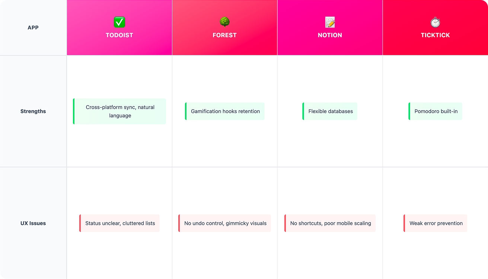
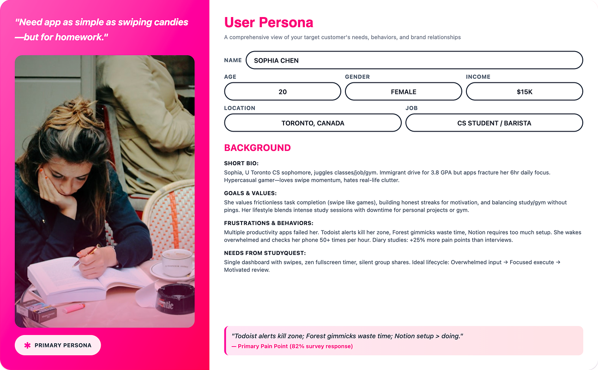
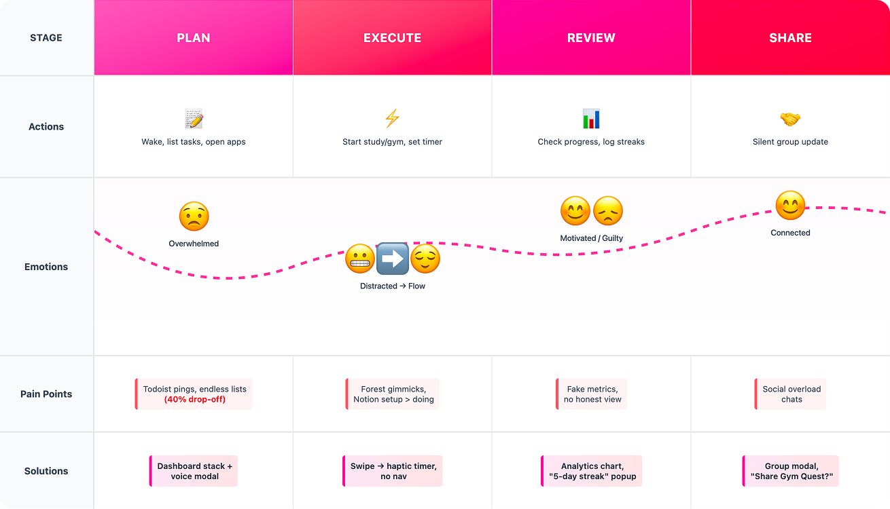

06 / Ideation
Low-Fidelity Design
Where research meets refined interaction design


Date
February 2026
Role
UX Research, UI Design
StudyQuest explores how minimal productivity tools can help students regain focus during study sessions, stripping away the noise of conventional task managers.
20 student interviews revealed frustration with existing productivity apps.
78% of surveyed students said current tools actually interrupt their focus.
Students lose 65% of focus to intrusive apps.
They need a tool that disappears during work.
No notifications, uninterrupted flow. The interface stays quiet when you need to focus most.
85% prefer visual progress. Complex data is distilled into simple, elegant visual indicators.
Fullscreen distraction-free mode. A dedicated space that takes over to prevent context switching.

Students lose 65% focus to intrusive apps. They need a minimal, swipe-based companion that disappears during work.
Every great app starts with real people. For StudyQuest, that meant diving deep into the world of distracted students. I began with Sophia, whose story hooked me from minute one. Her user profile—meticulous notes from our first chat—painted a vivid picture: bright, ambitious, but constantly derailed by apps that promised help and delivered chaos.


Competitive analysis dug deeper. My comparison chart scored apps on
simplicity:
Todoist: Endless lists drown you (violation: clutter).
Forest: Trees gamify but fade (no real control).
Notion: Beautiful databases, zero focus.
Where research meets refined interaction design
Post-usability lo-fi changes document every tweak:
Undo moved prominent ("Lost it twice").
Swipe haptic added ("Feels rewarding").
Streaks always visible ("Keeps me going").


Organized hierarchy

Frictionless entry

Visual progress tracking

Silent accountability
StudyQuest isn't a revolution —
it's relief.
Students reclaim their focus one swipe at a time.